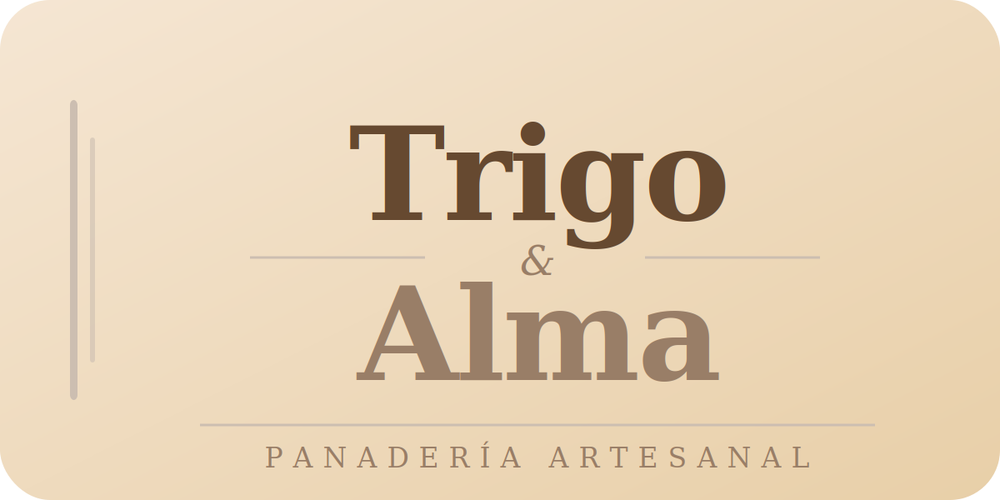
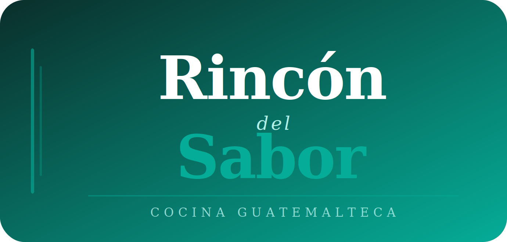

Cada página está deseñada para convertir visitantes en mas clientes.
¡HECHALE UN VISTAZO!

Landing page creada para una panadería artesanal. Catálogo de productos, precios y pedidos directos por WhatsApp.

Menú digital para restaurante de cocina guatemalteca. Consultable desde QR en mesa.